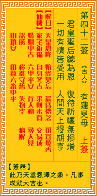

观音灵签第四十二签 【有莲见母】 |
 | |||
君垂恩泽润无边 覆祷祈穰没党偏 一切有情皆受用 均沾乐利得周全 |
||||
| 【吉凶】 | 上上签 | 【宫位】 | 酉宫 | |
| 【签语】 | 此卦天垂恩泽之象，凡事成就大吉也。 | |||
| 【解曰】 | 天皇恩降 始终莫忘 晨昏礼佛 可宜烧香 | |||
| 【仙机】 | 此签家宅祈福，自身冬吉，求财未有，交易成，婚姻中吉，六甲平安，行人动，田蚕六畜中平，寻人见，讼胜，移徙守旧，失物空，病解 ，山坟安。 | |||
| 【详解】 | 你施予的恩泽利益众人无数，又公正无私的祈祷上天赐给大众粮食;一切有情都因此受益无穷，得到甚大的好处与方便而得以周全。 天降甘露，君子莫忘，求谋成就，和合吉昌。此签天垂甘露之象，凡事大吉利也。 本签示之曰。天垂甘露之泉。凡事大吉利者。亦即是先难后易者所得。功名成。交易就。婚姻虽平庸。但是难得之缘也。时运至冬季即至。六畜。田亩皆旺之时。宜勤俭。千万不得浪透。陷已于绝境者。易言之。天降甘露。君子莫忘求谋成就。和合吉昌之签也。 此签有”顺势而为”之意。提醒当事人，凡事不要太固执。须知出于善意的做法没有什么不好，但要能审时度势，视情况来推动。勿立刻急于改变现状，而忽略了旧有的行为模式。对于旧有的模式，应仔细评估衡量，去芜存菁、再加上自己的新理念，或可让事情更臻完满。自己的想法固然没错，仍然可以听听别人的意见，对于旁人恳切的建言，要能虚心接受，慎重思考。切忌带着个人的偏见、只为了反对而反对。 | |||
| 【典故】 | 目莲是佛门的尊者，有神通。他的母亲作恶多端，死后在地狱的鬼道受苦，目莲没法救渡母亲，求助于佛祖，也没办法。佛祖唯有叫目莲 设兰盆会，供养十方僧侣，并由诸天菩萨施法，救渡地狱中的母亲。由是农历七月十五日为盂兰节，亦即孝亲节。后又演变为七月的“中元普渡”。佛经故事。 | |||